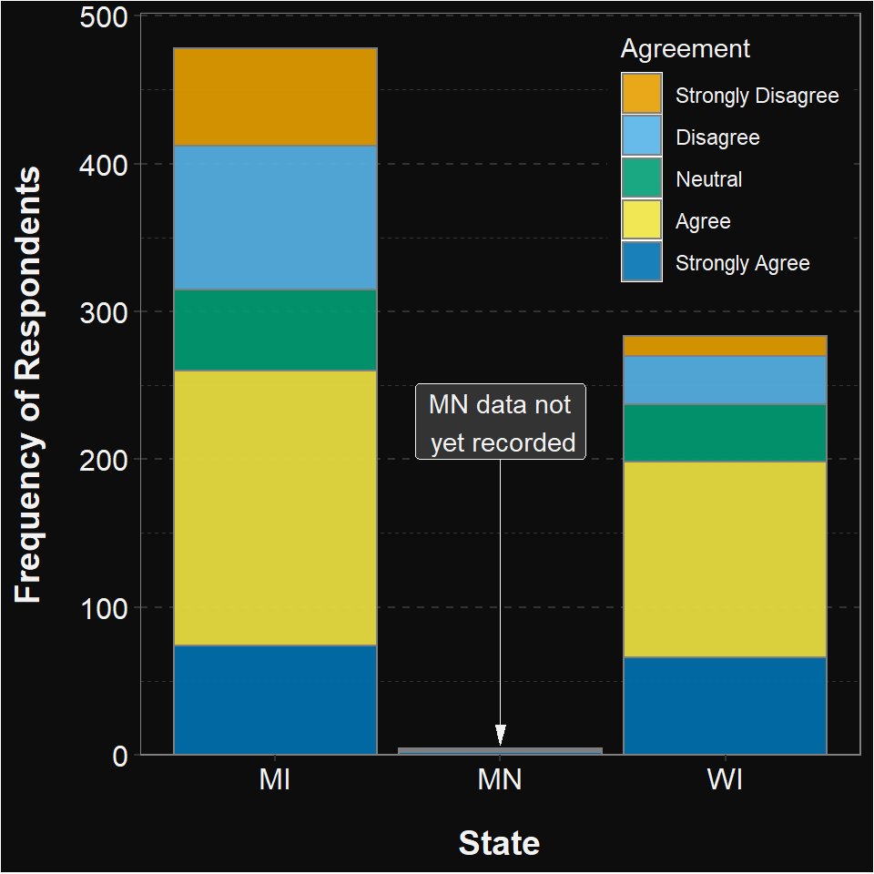
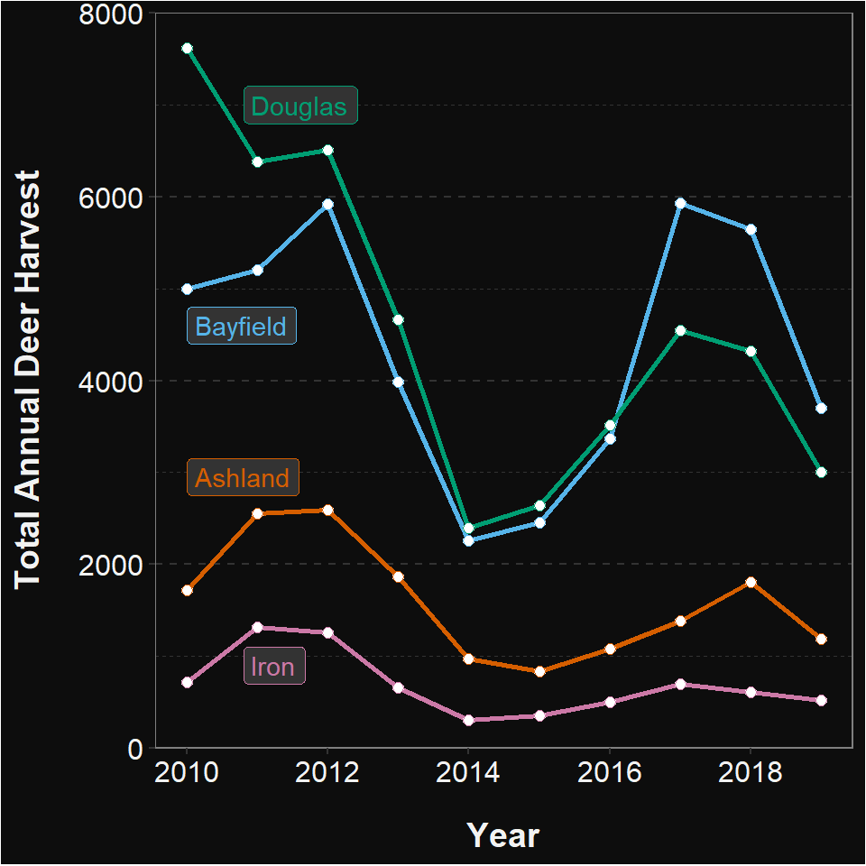

I have a colleague/friend who prefers Excel over ggplot graphs (yes, this has strained our friendship). His main issues are that he wants the following:
To demonstrate that this is all possible in ggplot2, I created the plot below (similar to what you did here). Construct ggplot2 code to recreate this plot.

Create a new ggplot theme called theme_excel_dark that reflects my friend’s preferences (start with theme_bw()). Hint: don’t include the parts that control the legend position … that will be specific to each plot and should not be part of this new theme.
Apply the theme you just created to the plot you made in “Total Annual Harvest by County and Year” on this page. Note that you may want to tweak your colors from the plot you made on the previous homework.
